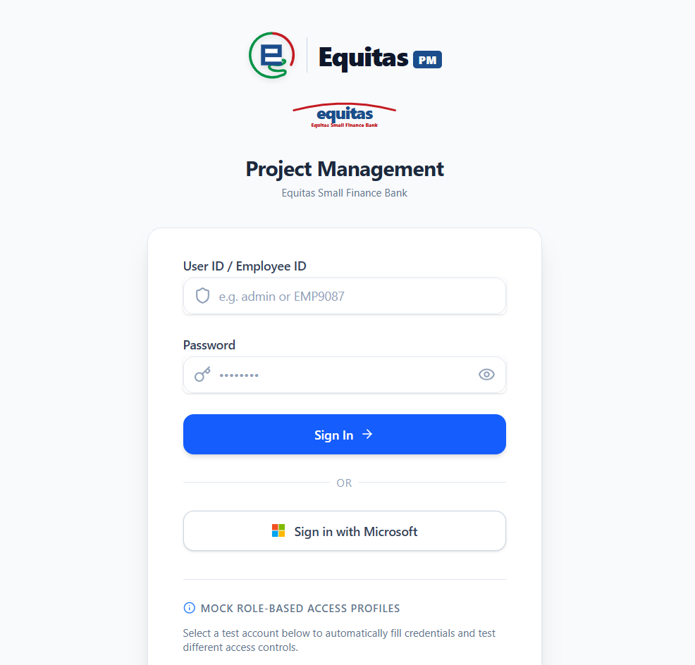
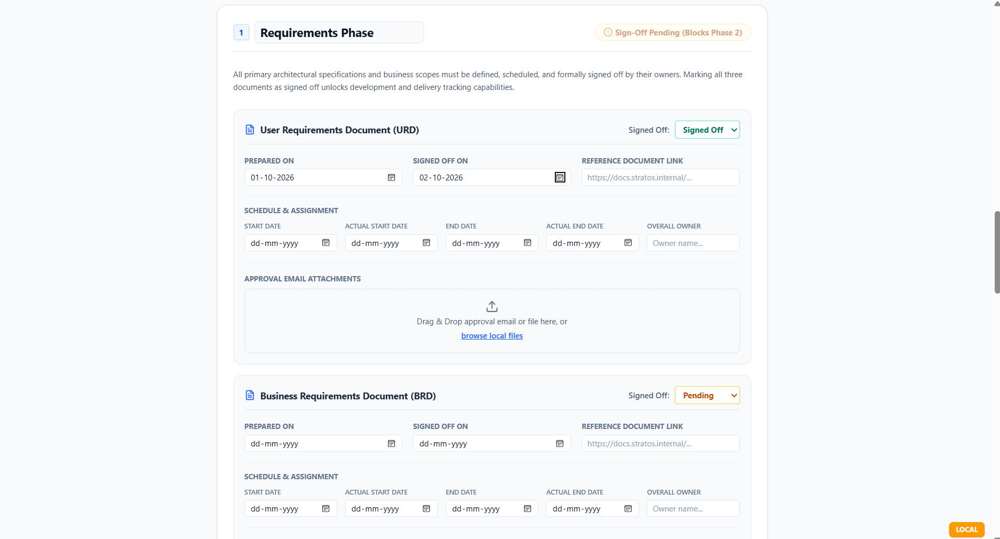
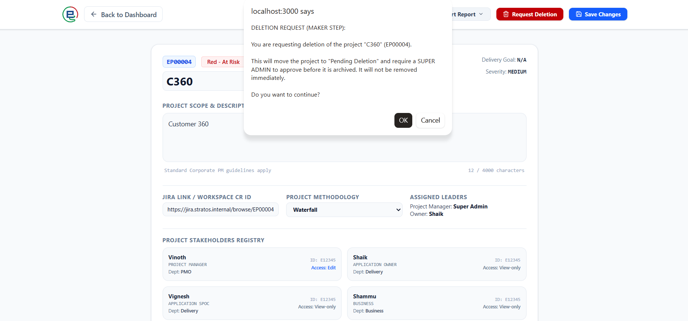
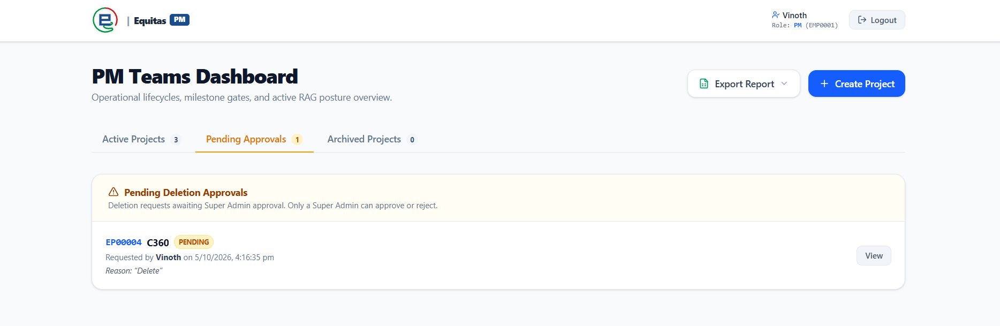
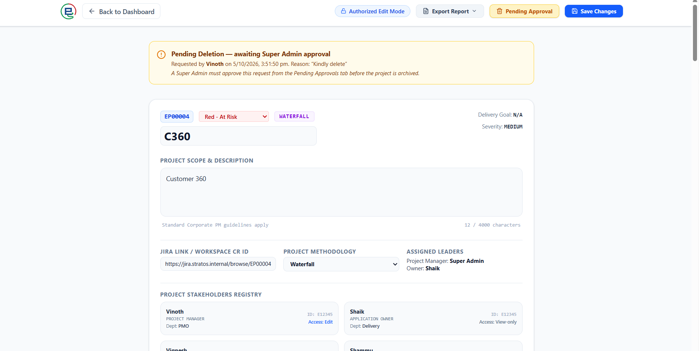
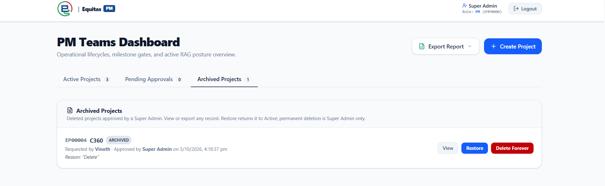
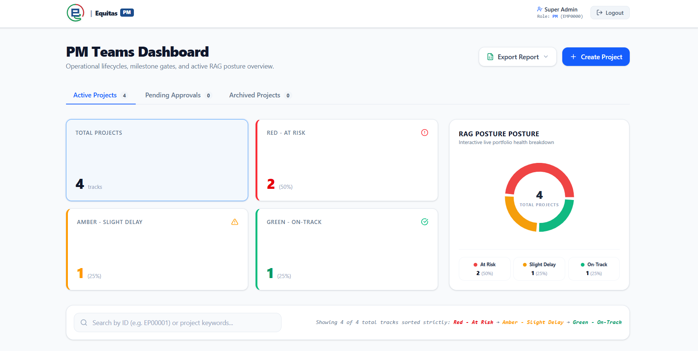
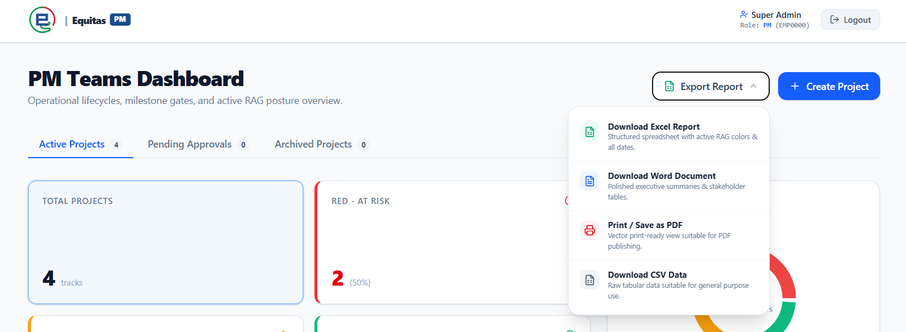

Audience: Super Admins, Admins, Project Managers (PMs), Application Owners, and all authorized users of the HawkPM / EquitasPM tool.
Purpose: Step-by-step instructions for the full project lifecycle, including the maker-checker deletion workflow and the Archived Projects bucket, with a screenshot after each step.
How to add screenshots: Each step has an image slot that loads a file from
docs/screenshots/. Run the app (npm run dev → http://localhost:3000),
capture each screen, and save the PNG using the exact filename shown in the caption. The image then appears here automatically.
A full filename list is in docs/screenshots/README.md.
Every action is governed by the user's role and relationship to the project. This is the authoritative permission set.
Role
Create
View
Edit
Request Delete
Approve Delete
Super Admin
Yes
All
All
Yes
Yes
Admin (Vinoth / admin)
Yes
All
All
Yes
No
Project Manager
Yes
All
Own only
No
No
Application Owner
Yes
All
Assigned only
No
No
User / Viewer
Yes
All
View only
No
No
Maker-checker: Deletion is a two-person control. An Admin (maker) requests deletion; a Super Admin (checker) approves it. The same person cannot both request and approve the same deletion.
2. Signing In
Open the tool: production https://hawk.equitas.bank.in, UAT https://hawkuat.equitasuat.bank.in, or local http://localhost:3000.
Sign in with Sign in with Microsoft (Entra ID SSO), or use a User ID + password for test profiles.
You land on the PM Teams Dashboard with your name and role shown at the top-right.
Screenshot 01 — screenshots/01-login.png · Login screen showing the User ID/password form and the "Sign in with Microsoft" button.

3. Creating a New Project All users
Any signed-in user can create a project. The system auto-assigns the next ID (EP00001, EP00002, …).
On the Dashboard (Active tab), click Create Project (top-right).
In the dialog, complete Project Overview: Name, Methodology (Waterfall/Agile/Hybrid), Severity (Low/Medium/High), Description, and optional Jira link.
Complete Key Stakeholders & Permissions (PM, Application Owner, SPOC, Business): Name, Employee ID, Department, and Edit/View permission. Use Add Stakeholder for more.
Click Initialize Project. Missing required fields are listed in an error banner.
The project appears on the Active dashboard with default RAG = Red.
Screenshot 02 — screenshots/02-create-overview.png · Create Project dialog, Project Overview section with the reserved Project ID visible.
5. Timeline, Risks & Delays Super AdminAdminOwn PM / Owner
Open the Timeline section; enter planned/actual dates for each milestone.
Click Save Changes. The first save creates a baseline; later saves record a new timeline version (timestamp, author, change summary).
Add Risks (description, owner, ETA) and Delays (reason, owner, impacted week); remove with the trash icon.
Screenshot 05 — screenshots/05-timeline.png · Timeline grid with version history, plus Risks & Delays.

6. Requesting Deletion — Maker Step Admin
Maker step: An Admin requests deletion. The project is NOT removed — it moves to Pending Deletion and awaits Super Admin approval.
Open the target project's Project Details screen as an Admin.
Click Request Deletion. Confirm the first prompt (maker-step warning).
Enter a mandatory reason when prompted (recorded in the audit trail).
Confirm the second prompt. The project moves to Pending Approvals; the button now shows "Pending Approval" and a banner appears.
Screenshot 06 — screenshots/06-request-deletion.png · The "Request Deletion" button + the reason prompt / confirmation dialog.

Screenshot 07 — screenshots/07-pending-banner.png · Project Details showing the amber "Pending Deletion" banner with requester + reason.

7. Approving / Rejecting Deletion — Checker Step Super Admin only
Sign in as a Super Admin (different person from the requester).
On the Dashboard, open the Pending Approvals tab (badge shows the count).
Review the request (project, requester, reason). Click Approve to archive the project, or Reject (reason required) to return it to Active.
Screenshot 08 — screenshots/08-pending-approvals.png · Pending Approvals tab with a request row and the Approve / Reject buttons.

8. Archived Projects Restore: Admin / Super AdminDelete Forever: Super Admin
Open the Archived Projects tab. Approved deletions appear here with the full audit trail (requested by, approved by, reason).
View any archived project (read-only) or export it.
Restore (Admin / Super Admin) returns the project to Active.
Delete Forever (Super Admin only) permanently purges it, with double confirmation. This cannot be undone.
Screenshot 09 — screenshots/09-archived-tab.png · Archived Projects tab showing an archived row with Restore and Delete Forever buttons.

9. Setting RAG Status Super AdminAdminOwn PM / Owner
On the Active tab, users with edit rights see a RAG dropdown on the project row.
Select Red / Amber / Green; it saves immediately and the dashboard re-sorts (Red first) and updates the pie chart.
Screenshot 10 — screenshots/10-rag-status.png · Dashboard RAG dropdown + the RAG summary cards / pie chart.

10. Exporting Reports All users
Click Export Report and choose Excel, Word, Print/PDF, or CSV. A single project can also be exported from its Details screen.
Screenshot 11 — screenshots/11-export-menu.png · The Export Report menu with format options.

11. Data & Governance Notes
Unique IDs: assigned sequentially (EP00001+) and never reused.
Create open; edit/delete controlled: anyone creates; Super Admin/Admin or the project's own PM/Owner edit; deletion follows maker-checker.
Maker-checker: Admin requests → Super Admin approves (archive) or rejects (active). Approver must differ from requester.
Audit trail: request/approve/reject/restore and timeline changes are stamped with who and when.
SSO: Microsoft sign-in users default to Viewer/Stakeholder; a user named Vinoth is treated as Admin; name/ID "superadmin" is Super Admin (interim rule until Azure AD roles are mapped).
Backups: this build stores data in the browser; export reports for record-keeping (shared persistence requires the planned backend/DB).